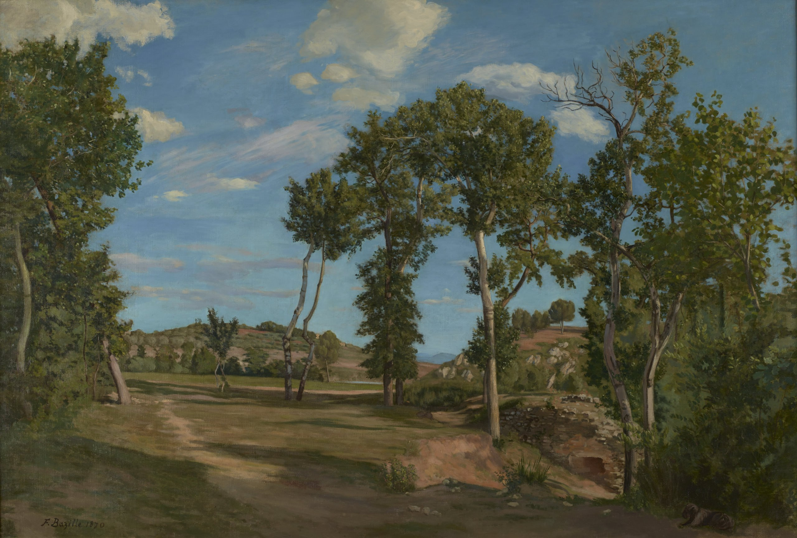

Жан Фредерик Базиль
Paysage au bord du Lez (Пейзаж на берегу Лез), 1870

Холст, масло, 137,16 x 200,66 см
Институт искусств Миннеаполиса, Миннеаполис. Семья художника, Монпелье - Марк Базиль, брат художника - Фредерик Базиль, племянник художника - Галерея Луи Карре, Париж - Галерея Вильденштейна, Париж - Уолтер П. Крайслер - Институт искусств Миннеаполиса, 1969 (Специальный резервный фонд искусств).
История картины
- В июне 1870 года Базиль сообщил отцу: "Я почти закончил большой пейзаж (эклогу)". Две недели спустя он поступил на службу во французскую армию во время Франко-прусской войны и погиб в бою под Орлеаном в ноябре. "Пейзаж у реки Лез" – это «большой пейзаж», упомянутый в переписке Базиля, и его конкретное упоминание о нём как об «эклоге» породило предположения о его замысле. Базиль, несомненно, знал, что эклога – это идиллическая поэма в форме беседы крестьян на фоне аркадского пейзажа. Эта композиция, несмотря на отсутствие фигур, своим сиянием и покоем, безусловно, соответствует традиции буколических пейзажей. https://www.bazille-catalogue.com/landscape-on-the-banks-of-the-lez-68.html
Источник: https://collections.artsmia.org/art/1728/landscape-by-the-lez-river-jean-frederic-bazille